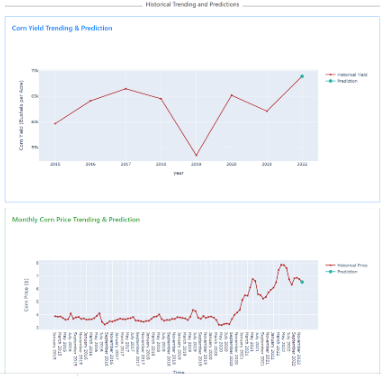

Applied AI: Corn Yield and Corn Price Predictions
- Abstract:
Purpose
The project aims to build an AI-based platform to predict 2022 corn yield and corn price.
Tasks
For corn yield, we use the MODIS sensor image datasets and ground truth yield data from USDA For corn price, we use yield data from USDA, personal income data from US Bureau of Economic Analysis and price dataset from Macrotrends. The sensor images are processed and transformed into histograms of pixel counts as inputs for deep learning models. Price datasets are processed and transformed with a sliding window of 12 months for price modeling. We implemented five models for corn yield: DNN, CNN, LSTM, CNN-DNN and CNN-LSTM and seven models for corn price: SARIMA, linear regression, random forest, gradient boosting decision tree, LSTM, FNN and SARIMA-LSTM.
Outcomes
In the corn yield problem, the CNN model shows the best performance with RMSE = 16.92, MAPE = 6.94 and R2 = -0.01. In the corn price problem, the SARIMA model shows the best performance with MAPE = 0.0419, MSE = 0.07 and RMSE = 0.2645. Therefore, we save CNN and SARIMA as .h5 and .pkl files to make predictions in the web application. The web application is successfully implemented using the Flask framework. The user can use the website to get insights for 2022 annual corn yield and monthly price predictions and historical data at state and county levels with interactive UI and visualizations.
Applications
Furthermore, corn yield and price can be applied into other platforms to predict relevant environmental or economical factors as a transfer learning technique.
- Datasets: MODIS sensor images, USDA yield, BEA personal income and Macrotrends price data.
- Models:
- Corn yield: DNN, CNN, LSTM, CNN-DNN, CNN-LSTM
- Corn price: SARIMA, linear regression, random forest, gradient boosting tree, LSTM, FNN, SARIMA-LSTM
- My contribution: Corn yield modeling (DNN, CNN, CNN-DNN), web development.
- Demo Video: Click Here
- PPT: Click Here
- Report: Click Here

Trending and Prediction View
-
Technologies:
researching, deep learning, machine learning, data mining, data collection, data preparation, AI web development (Heroku, flask, javascript, HTML, CSS), Pytorch, Keras, GCP, Google Earth Engine, Python, project management, technical report writing, Jira
-
Category:
Data Science